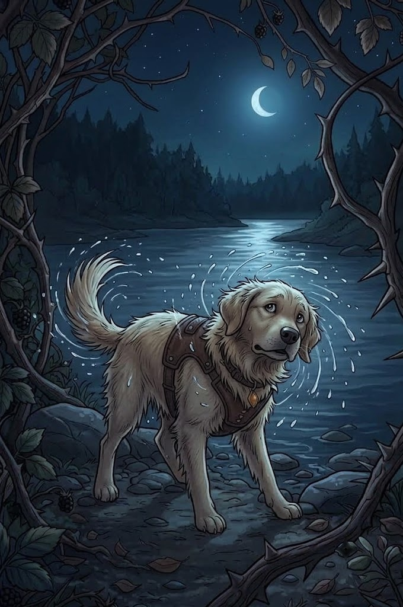

3/3
Camino Final: Demasiada Corriente
🔊 Narración:
Nami da un salto valiente al agua y empieza a nadar con todas sus fuerzas, pero la corriente helada la vence.
El río la arrastra suavemente hacia una pradera desconocida. Sale a la orilla y se sacude el pelaje empapado de la cabeza a la cola, pero la noche ha caído y ha perdido su casa de vista.
♦ ───── ♦
¡Nami no se rendirá!
Ayúdala a volver con su familia.